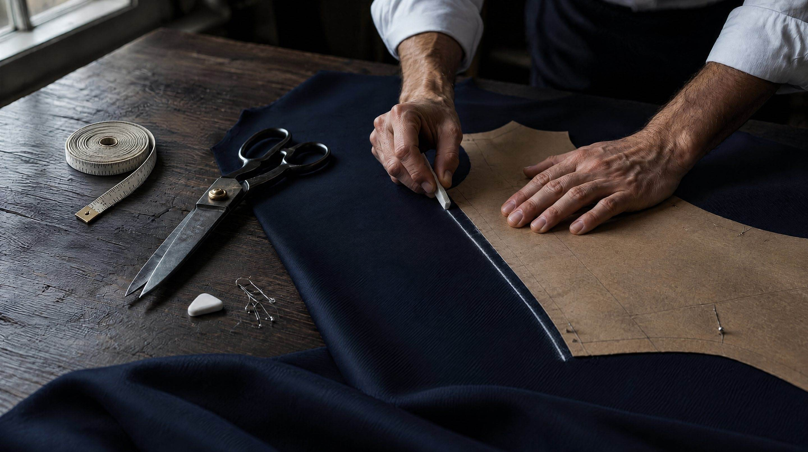
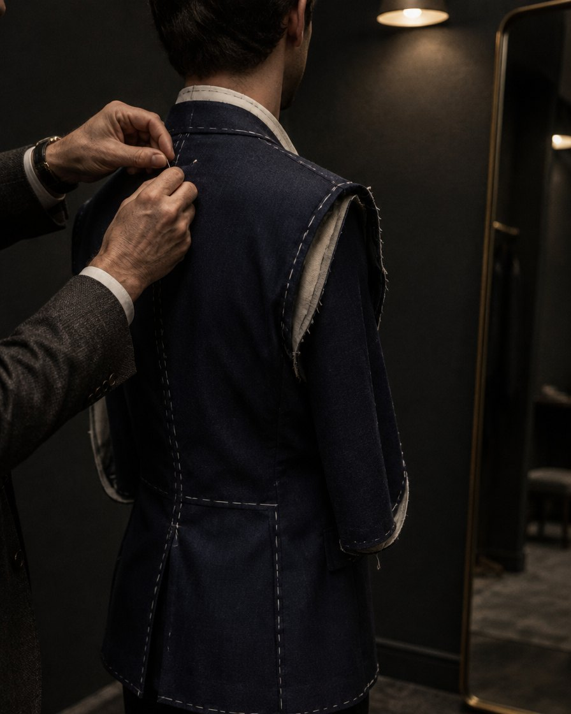
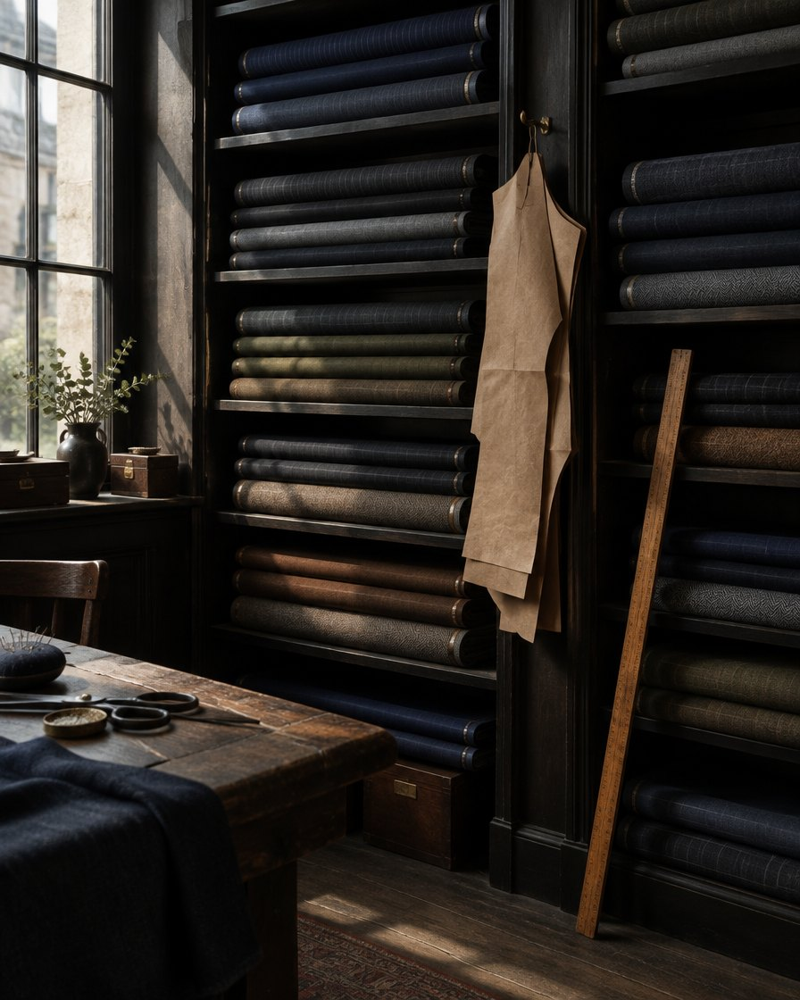

Every suit starts as a line of chalk.
Custom suits cut from a pattern drafted for you, then basted, fitted and finished in Dallas. Your pattern is kept on file, so the next suit starts where this one finished.
drawn to you.

From the first visit to the last stitch.
Three fittings, each one closer. Nothing is sewn for good until it fits.
- 1
First visit
We take thirty-odd measurements, watch how you stand and move, and talk through where you will wear it. Bring the shoes you'd wear with the suit.
- 2
Your pattern
Your measurements become a paper pattern drawn by hand. It is yours and stays on file for every suit after this one.
- 3
Baste fitting
The jacket is held together with white thread so every seam can still move. This is where it starts to look like you.
- 4
Forward and final fittings
The jacket comes back with its sleeves and collar on for a forward fitting, then once more finished and pressed. The main seams keep an inlay, extra cloth folded inside at the center back, side seams and trouser waist and seat, so the suit can be let out years from now.
Draft your jacket.
Choose a cloth, a lapel and a lining. We'll have the cloth and lining pulled for you when you come in. Every jacket is fully canvassed with a hand-padded lapel, never fused. Vents, buttons and pockets we settle at the first visit.

The cloth library.
Hundreds of cloths in the books from the merchant Holland & Sherry and the mills Loro Piana and Vitale Barberis Canonico, and a wall of house bolts you can hold, drape over your shoulder and see in daylight before anything is cut. Cloth from the books arrives in about two weeks.
- WorstedsSmooth and hard-wearing. The suit you will reach for most.
- Tropical woolsOpen weave that breathes through a Dallas August.
- FlannelsSoft and warm, for the weeks it actually gets cold.
- LinensRelaxed, a little rumpled, made for outdoor weddings.
Book a first visit.
The first visit takes about an hour at the studio. Suits start at $1,800, and most take eight to ten weeks from first visit to final fitting. Tell us what the suit is for and the week that suits you, and we'll write back to confirm a time.
Demo only: nothing was sent. A real Inlay would email you within a day to confirm a time.